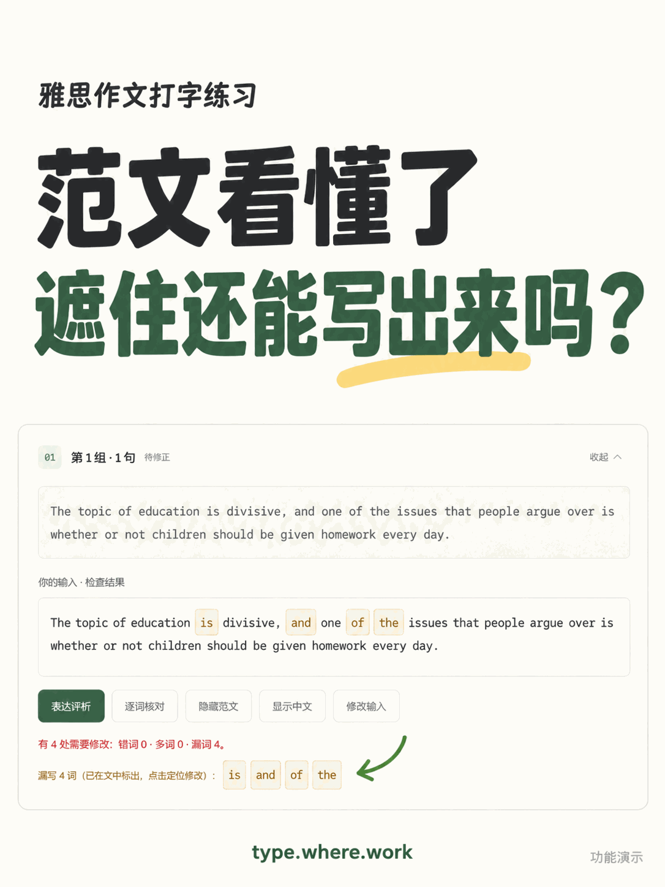

句子漫游是一个雅思作文打字练习工具。从全文跟打到分句默写，把范文里的句子练成自己的表达。这里也记录微微学习雅思、制作练习工具的过程。
找不到顺手的雅思作文练习网站，于是从自己的练习需要出发，做了一个。

看懂一句之后，隐藏原文自己写一遍，再用逐词核对找到漏掉的小词。
选中好词好句，直接标黄，连同原句和上下文一起保留。标记保存在当前浏览器。
这里有一个可复用的单页模板，替换图片、标题和正文即可使用。